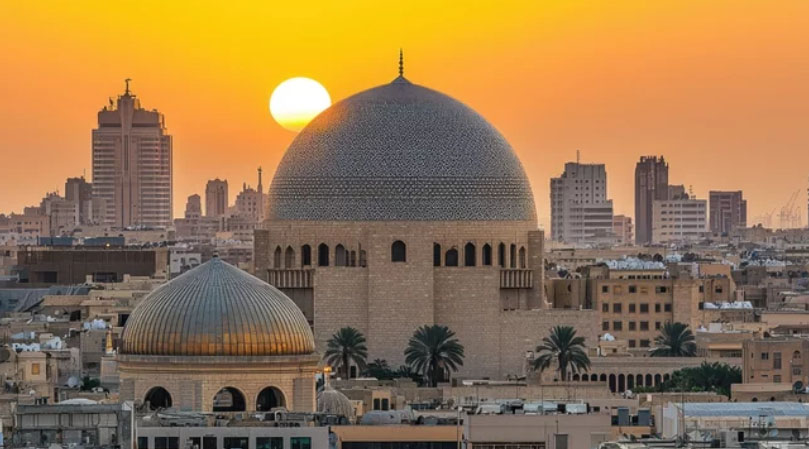
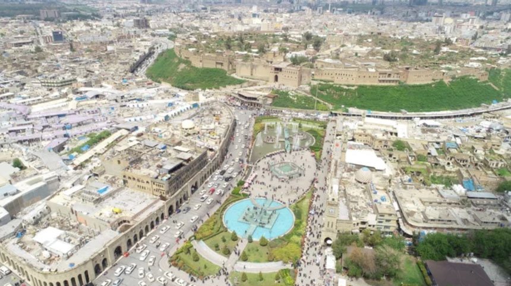
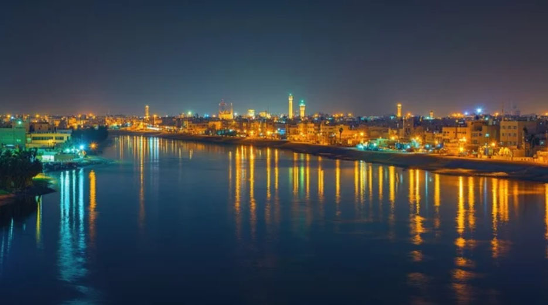
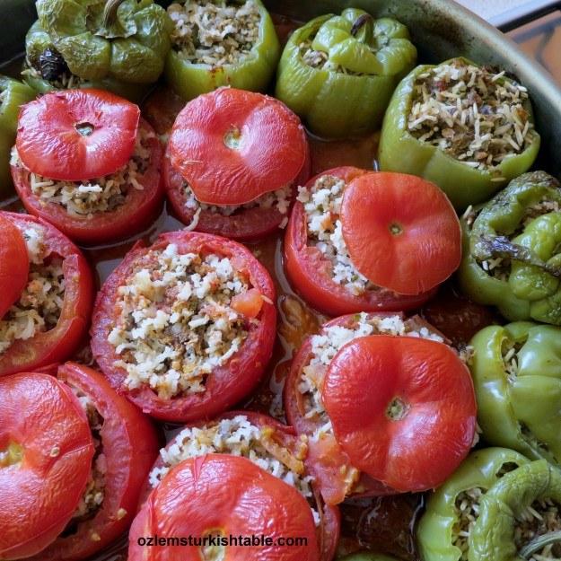

UNESCO World Heritage
Babylon
The legendary city of the Hanging Gardens and the reconstructed Ishtar Gate.

Exploring the cradle of human civilization and the legacy of Mesopotamia.
Witness the architectural marvels that have stood for millennia through the sands of time.
The legendary city of the Hanging Gardens and the reconstructed Ishtar Gate.

A massive Mesopotamian temple complex dating back to the Early Bronze Age.

One of the oldest continuously inhabited cities on Earth.

Southern Iraq's unique eco-system, often associated with the Garden of Eden.

The capital of culture, once the scientific center of the world during the Islamic Golden Age.

A modern hub where history meets rapid development, known for its security and hospitality.

"The Venice of the East," famous for its canals, palm groves, and rich maritime history.
A melting pot of flavors passed down through generations.
Iraq's national dish—seasoned carp slow-grilled over an open fire.

Vibrant vegetables stuffed with aromatic rice and minced meat.
Saffron rice with nuts, raisins, and spices, often served with meat.
The beloved date-filled cookies, a staple for celebrations.
Iraq, often called the "Cradle of Civilization," is home to ancient Mesopotamia where writing and agriculture first emerged. The modern republic was established in 1958 after the overthrow of the monarchy, later enduring decades of conflict and political transitions. Today, the nation continues to rebuild and redefine its rich cultural heritage amidst ongoing socio-political evolution.
世界最古の文明の一つで、ウルやウルクなどの都市国家が栄えました。
サルゴン王によるメソポタミア統一。
ハンムラビ法典で知られる古代王国。
北部メソポタミアを中心に広大な領域を支配。
バグダードが首都となり、イスラム文化の黄金時代を迎える。
モンゴル帝国の支配下に入る。
ティムールの遠征により一時的に支配。
トルコ系王朝がイラクを支配。
長期間にわたりイラクを統治し、バグダードが重要な都市となる。
第一次世界大戦後、イギリスの委任統治下に置かれる。
イギリスから独立し、ハシミテ家による君主制が成立。
1958年の革命で君主制が廃止。1979年にサダム・フセインが大統領に就任し、フセイン政権の下、イラン・イラク戦争（1980年9月～1988年8月）、クウェート侵攻（1990年8月）、湾岸戦争（1991年1月～2月）等が行われた。2003年3月、米国等による対イラク武力行使が開始され、4月にはバグダッドが事実上陥落、フセイン政権は崩壊し、その後、新政府が樹立された。
イラクの地は、古代から現代に至るまで、数多くの王朝や国家が交代し、文明の中心地として重要な役割を果たしてきました。